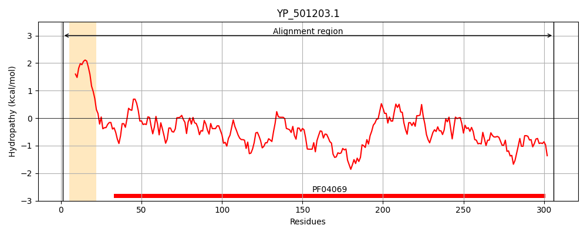
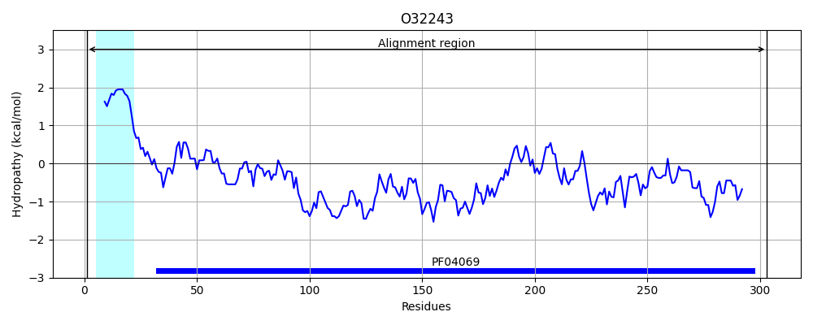
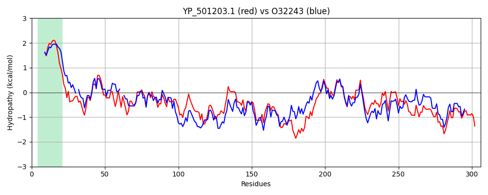

Hit Accession: O32243
Hit TCID: 3.A.1.12.4
Hit Description: gnl|BL_ORD_ID|7102 gnl|TC-DB|O32243|3.A.1.12.4 Glycine betaine/carnitine/choline-binding protein precursor (Osmoprotectant-binding protein) - Bacillus subtilis.
Mach Len: 306
e:0.000000
Query TMS Count : 1
Hit TMS Count: 1
TMS-Overlap Score: 0.900000
Predicted Substrates:CHEBI:17237;(E)-4-(trimethylammonio)but-2-enoate, CHEBI:16244;4-(trimethylammonio)butanoate, CHEBI:26272;L-proline betaine, CHEBI:3665;choline, CHEBI:3424;carnitinium, CHEBI:3073;glycine betaine, CHEBI:4756;ectoine, CHEBI:16457;S,S-dimethyl-beta-propiothetin, CHEBI:4623;(carboxymethyl)(dimethyl)sulfonium
BLAST Alignment:
Score: 899 , Bit scores: 350 bits, E-value: 1.1e-121, Alignment length: 306, Percentage identity: 56
Query: 1 MKKIKYILVVFVLSLTVLSGCSLPGLGSKSTKNDVKITALSTSESQIISHMLRLLIEHDTHGKIKPTLVNNLGSSTIQHNALINGDANISGVRYNGTDLTGALKEAPIKNPKKAMIATQQGFKKKFDQTFFDSYGFANTYAFMVTKETAKKYHLETVSDLAKHSKDLRLGMDSSWMNRKGDGYEGFKKEYGFDFGTVRPMQIGLVYDALNSEKLDVALGYSTDGRIAAYDLKVLKDDKQFFPPYAASAVATNELLRQHPELKTTINKLTGKISTSEMQRLNYEADGKGKEPAVVAEEFLKKHHYFD 306
M KIK++ ++ + +L GCSLPGLG S + +KI A S +ES+I+++M+ LIEHDT + LV NLGS+ +QH A++ GD +IS RY+GTDLT L + K+PKKA+ Q F+K+F +FDSYGF NTYAF VTK+ A+K H+ TVSDL K++ +LG+D++W+ RKGDGY+GF YGF+FGT PMQIGLVYDA+ + K+D L YSTDGRI AYDLK+LKDDK+FFPPY S V ++L++HPEL+ INKL G+I T MQ LNYE DGK KEP+VVA+EFL+KHHYFD
Sbjct: 1 MTKIKWLGAFALVFVMLLGGCSLPGLGGASD-DTIKIGAQSMTESEIVANMIAQLIEHDTD--LNTALVKNLGSNYVQHQAMLGGDIDISATRYSGTDLTSTLGKEAEKDPKKALNIVQNEFQKRFSYKWFDSYGFDNTYAFTVTKKFAEKEHINTVSDLKKNASQYKLGVDNAWLKRKGDGYKGFVSTYGFEFGTTYPMQIGLVYDAVKNGKMDAVLAYSTDGRIKAYDLKILKDDKRFFPPYDCSPVIPEKVLKEHPELEGVINKLIGQIDTETMQELNYEVDGKLKEPSVVAKEFLEKHHYFD 303 | Protein Hydropathy Plots: |
|---|
|  |  |
Pairwise Alignment-Hydropathy Plot:
|
|---|
|  |